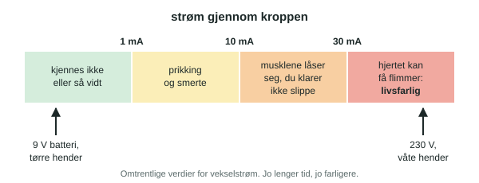
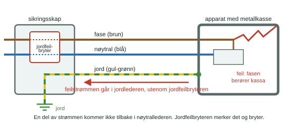

Elektrisk sikkerhet
Strøm kan du ikke se, høre eller lukte. Derfor må du vite hvor faren er. Her lærer du hvorfor strøm er farlig for kroppen, hva som beskytter deg, hva du selv får gjøre, og hva du gjør hvis en ulykke skjer.
Det er strømmen som skader
Kroppen leder strøm. Kommer du borti noe som har spenning, og samtidig står på bakken eller holder i noe annet, kan det gå en strøm gjennom kroppen. Det kalles et elektrisk støt. Det er strømmen gjennom kroppen som gjør skade, og den kan du finne med Ohms lov fra siden Strøm, spenning og resistans.
Resistansen i kroppen avhenger mest av huden. Tørr hud kan ha en resistans på 100 000 Ω eller mer. Med våt eller svett hud kan resistansen gjennom kroppen være så lav som ca. 1000–2000 Ω.
Oppgave: Hvor stor strøm går gjennom kroppen hvis du tar på et batteri på 9 V med tørre hender (100 000 Ω), og hvis du kommer borti 230 V med våte hender (1000 Ω)?
Løsning:
- Batteri: \( I = \dfrac{U}{R} = \dfrac{9 \text{ V}}{100\,000 \ \Omega} = 0{,}00009 \text{ A} = 0{,}09 \text{ mA} \)
- Stikkontakt: \( I = \dfrac{230 \text{ V}}{1000 \ \Omega} = 0{,}23 \text{ A} = 230 \text{ mA} \)
Svar: Batteriet gir under 0,1 mA, som du ikke kjenner. Stikkontakten kan gi rundt 230 mA, som er livsfarlig. Tallene er omtrentlige, men de viser hvorfor lav spenning er trygt og 230 V er farlig.

Strøm kan også gi brannskader, både utvendig og inne i kroppen der strømmen har gått. Et støt kan i tillegg få deg til å falle, for eksempel ned fra en stige. Lysbuer, som er gnister med svært høy temperatur, kan gi brannskader og øyeskader.
Jording
De fleste apparater med metallkasse er koblet til en jordleder. I nye anlegg er den gul og grønn. Den går fra metallkassen tilbake til sikringsskapet og ned i jorda. Hvis en feil gjør at fasen kommer borti metallkassen, går strømmen i jordlederen i stedet for gjennom deg. Da løser vernet ut og bryter strømmen.

Jordfeilbryteren
En jordfeilbryter sammenligner strømmen som går ut til apparatet, med strømmen som kommer tilbake. Normalt er de like store. Er det en forskjell, lekker det strøm et sted, for eksempel gjennom jordlederen eller gjennom et menneske. Er forskjellen 30 mA eller mer, bryter jordfeilbryteren strømmen på en brøkdel av et sekund.
Jordfeilbryteren hindrer ikke at du får støt, men den bryter så raskt at støtet sjelden blir livsfarlig. Den beskytter ikke hvis du tar på to ledere samtidig, for eksempel fase og nøytral, fordi strømmen da kommer tilbake som normalt.
Jordfeilbryteren har en testknapp. Den skal prøves jevnlig. Når du trykker på knappen, skal bryteren slå ut.
- Sikringen beskytter ledningene mot for stor strøm og kortslutning. Se Elektrisk effekt og energi.
- Motorvernet beskytter motoren mot overoppheting. Se Elektromotorer i anlegget.
- Jordfeilbryteren beskytter mot farlige støt ved å bryte på en brøkdel av et sekund, og mot brann fra strøm som lekker.
Hvem får gjøre hva?
Etter norske regler skal arbeid på elektriske anlegg gjøres av elektrofagfolk i en registrert elvirksomhet. Det gjelder for eksempel å koble ledninger i det faste anlegget og å åpne koblingsbokser og tavler.
Som operatør skal du:
- bruke utstyret slik det er ment, og etter prosedyrene
- se etter skader på ledninger, støpsler og utstyr før du bruker det
- melde fra om feil, og la være å bruke utstyr som er skadet
- koble fra, låse og merke utstyr før arbeid, etter prosedyren. Se Lås og merk i HMS.
Lekfolk, altså folk uten elektroutdanning, kan gjøre noe enkelt arbeid selv. De kan for eksempel slå på igjen en automatsikring, bytte en smeltesikring med en av samme størrelse, og skifte støpsel eller ledning på en skjøteledning eller et løst apparat. Direktoratet for samfunnssikkerhet og beredskap (DSB) har en oversikt over hva lekfolk får gjøre. Løser vernet ut igjen, er det en feil som en fagperson må finne. I industrien gjelder bedriftens egne prosedyrer for hva du får gjøre.
Gode vaner
- Bruk aldri ledninger, støpsler eller apparater som er skadet.
- Hold væske og strøm fra hverandre. Legg ledninger slik at de ikke ligger i søl.
- Bruk utstyr med riktig IP-grad der det er vått eller støvete.
- Bruk bare godkjent elektrisk utstyr i Ex-soner, der det kan være eksplosiv atmosfære. Se Brann og eksplosjon i HMS.
- Dra i støpselet, ikke i ledningen, når du kobler fra.
- Ikke overbelast skjøteledninger og grenuttak.
Hvis ulykken skjer
- Bryt strømmen med bryteren, sikringen eller ved å trekke ut støpselet. Rør aldri personen før strømmen er brutt, ellers kan du selv få støt. Kan du ikke bryte strømmen, og det er lav spenning som 230 V, kan du skyve personen løs med noe tørt som ikke leder strøm, for eksempel en trelist. Står du selv tørt, er det tryggere.
- Ved høyspenning, for eksempel en kraftlinje eller en nettstasjon, skal du holde god avstand og ikke prøve å redde personen selv. Ring 113 og si at det er høyspenning.
- Ring 113.
- Gi førstehjelp. Puster personen ikke normalt, starter du hjerte-lunge-redning.
- Alle som har fått strømskade, skal undersøkes av lege, selv om de føler seg bra. Strømmen kan ha påvirket hjertet eller gitt indre skader.
- Meld fra om ulykken etter rutinene. Se Beredskap og avvikshåndtering i HMS.
230 V og 400 V kan drepe. Arbeid aldri på elektriske anlegg selv. Etter norske regler skal det gjøres av elektrofagfolk i en registrert elvirksomhet. I mange boliger er den blå lederen en fase, så behandle alle ledere som strømførende. Bruk aldri skadet utstyr, og hold væske borte fra strøm. Før arbeid på en maskin skal den kobles fra, låses og merkes. Ved en ulykke bryter du strømmen før du rører personen.
Test deg selv
Hva er det som skader kroppen ved et elektrisk støt?
- strømmen som går gjennom kroppen
- effekten på apparatet
- frekvensen i strømnettet
Det er strømmen gjennom kroppen som gjør skade. Hvor stor den blir, avhenger av spenningen og av resistansen i kroppen, etter Ohms lov.
Hvorfor er det farligere å ta på noe strømførende med våte hender?
- Fordi vann øker spenningen.
- Fordi våt hud har mye lavere resistans, så strømmen blir større.
- Fordi vann gjør strømmen til likestrøm.
Med lavere resistans blir strømmen større ved samme spenning, \( I = U/R \).
Hva gjør en jordfeilbryter?
- Den beskytter motoren mot overoppheting.
- Den bryter strømmen hvis det lekker strøm, for eksempel gjennom et menneske.
- Den gjør spenningen lavere.
Jordfeilbryteren sammenligner strømmen ut og strømmen tilbake. Er forskjellen 30 mA eller mer, bryter den på en brøkdel av et sekund.
Hvilken farge har jordlederen i et nytt anlegg?
- blå
- brun
- gul og grønn
I nye anlegg er jordlederen gul og grønn, og faselederne er brune, svarte eller grå. Den blå lederen er nøytralleder i et 400 V-nett, men i IT-nettet i mange boliger er den en fase. Eldre anlegg kan ha andre farger. Behandle derfor alle ledere som strømførende.
En kollega har fått strøm gjennom seg og ligger fortsatt borti en ledning. Hva gjør du først?
- Drar kollegaen bort fra ledningen.
- Bryter strømmen.
- Starter hjerte-lunge-redning.
Rører du kollegaen før strømmen er brutt, kan du selv få støt. Bryt strømmen først, ring 113, og gi så førstehjelp.
Ordliste
| Begrep | Forklaring | Engelsk |
|---|---|---|
| elektrisk støt | Strøm som går gjennom kroppen fordi du kommer borti noe som har spenning. Kan gi muskelkramper, brannskader og hjerteflimmer. | |
| jordleder | Den gul-grønne lederen som kobler metallkasser til jord, slik at feilstrøm går der i stedet for gjennom et menneske. | protective earth |
| jordfeilbryter | Et vern som bryter strømmen hvis det lekker strøm ut av kretsen, for eksempel gjennom et menneske. Bryter vanligvis ved 30 mA. | residual current device (RCD) |
Les mer
- Lås og merk og lukkede rom og Brann og eksplosjon i HMS.
- Beredskap og avvikshåndtering i HMS.
Om kildene: Teksten, eksemplene og figurene på denne siden er laget for dette nettstedet. Verdiene for strøm gjennom kroppen og for resistansen i huden er omtrentlige og bygger på åpne kilder om elektrisk sikkerhet. Siden bygger på undervisningsopplegg i kjemiprosess- og laboratoriefag ved Sauda vgs, som er utarbeidet med utgangspunkt i blant annet Kjemien stemmer, Laboranten og åpne nettkilder.